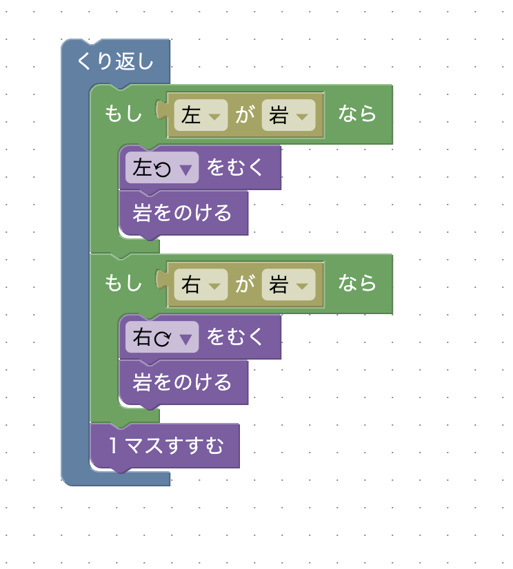
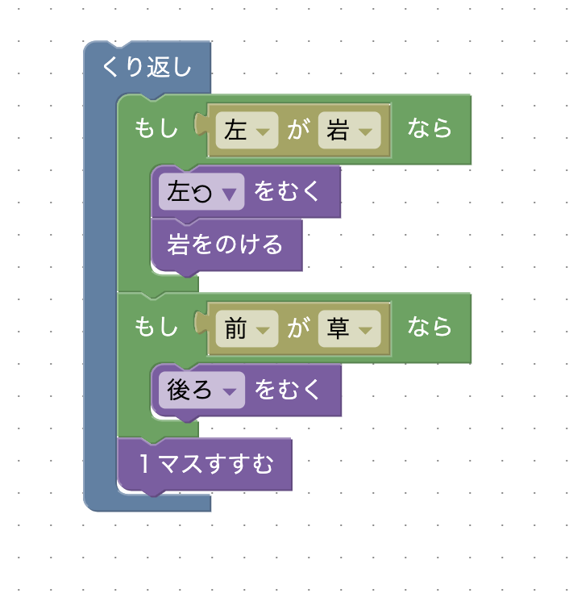

ゴールするためには途中で3つの岩をのけなければいけません。どんな時に岩を壊せばいいでしょうか？「繰り返し」と「もし〜なら」のブロックを使ってみよう！
星3を取るには一工夫必要です。星2のやり方では「岩をのける」ブロックを2回使ったと思います。岩をのける時、方向転換してから岩をのけるので複数のブロックが必要になります。そこで、上手に方向転換することで「岩をのける」を使うのは岩が…にある時だけになりませんか？
「繰り返し」と「もし〜なら」などのブロックを次のように使うと星２でクリアできます。岩が右か左にある時にはその方向を向いて岩をのけます。岩が右にある時と左にある時の順番はどちらが先でも良いです。
岩をのける際には「方向転換」と「岩をのける」の2つの動作が必要です。そこで「岩をのける」場合を1つに集約できないでしょうか？
次のように、前が草になるまで進んで後ろを向くことで、プレイヤーが岩をのける際に、岩が3つとも共通して進行方向左側にあるようにできます。方向転換して岩をのける代わりに、方向転換だけだと1つの動作で済みます。そのため、星2の解答と比べて「岩をのける」動作を一回削減できるので、1ブロック減らせます。
